3 - Convolutional Neural Networks
CAS Agentic AI & Deep Learning - Computer Vision (Part1)
Institute for Data Science I4DS, FHNW
Why CNNs Work for Images
Properties of Image Data
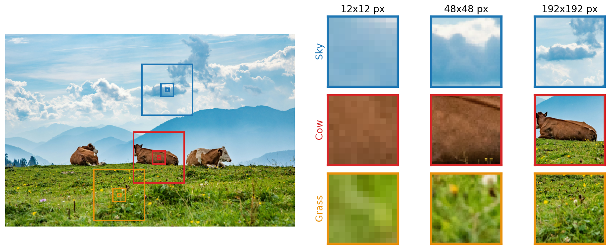
Three regions (sky, cow, grass) at three scales: 12, 48 and 192 pixels. Image Source
- High-Dimensional: An RGB image of size \(224 \times 224\) has \(224 \times 224 \times 3 = 150{,}528\) values
- Locality: Nearby pixels are statistically related (edges, textures, objects)
- Stability under transformations: A cow should be recognized regardless of position
- Hierarchical Structure: Features at multiple scales (pixels → edges → textures → objects)
MLPs Need Flat Inputs
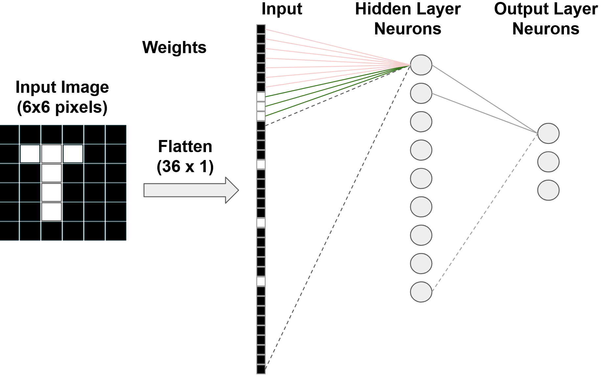
Figure 1: Image \(\in \mathbb{R}^{H \times W \times C}\) → flatten → vector \(\in \mathbb{R}^p\).
Flattening destroys spatial structure.
Demo: An MLP Reads Digits
Draw a digit in the centre, then draw it small in a corner. Does the prediction hold? Open in new tab
Demo: A CNN Reads Digits
Same test. What is different inside the network? Open in new tab
MLPs and How they Learn
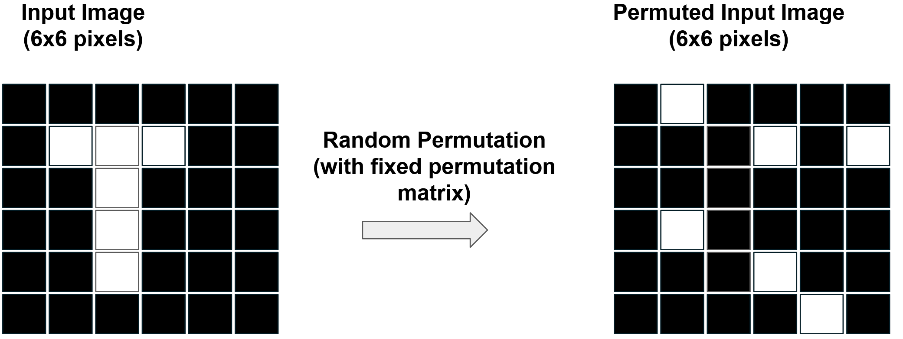
Question: Can an MLP learn from images whose pixels are shuffled with a fixed permutation \(\mathbf{P}\), i.e. \(f(\mathbf{P}\mathbf{x})\)?
Yes, equally well: an MLP does not use the neighbourhood of pixels. We need an architecture with inductive biases for images.
Invariance and Equivariance
Invariant — output unchanged by transformation: \[f(g(\mathbf{x})) = f(\mathbf{x})\] “I don’t care about the transformation.”
Equivariant — output transforms with input: \[f(g(\mathbf{x})) = g(f(\mathbf{x}))\] “I transform my output the same way.”
Invariance — Classification
Equivariance — Detection
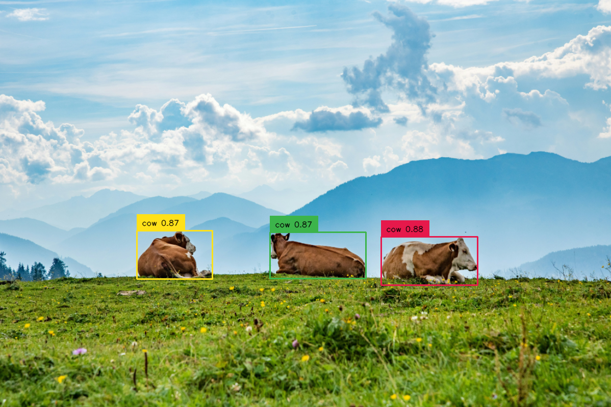
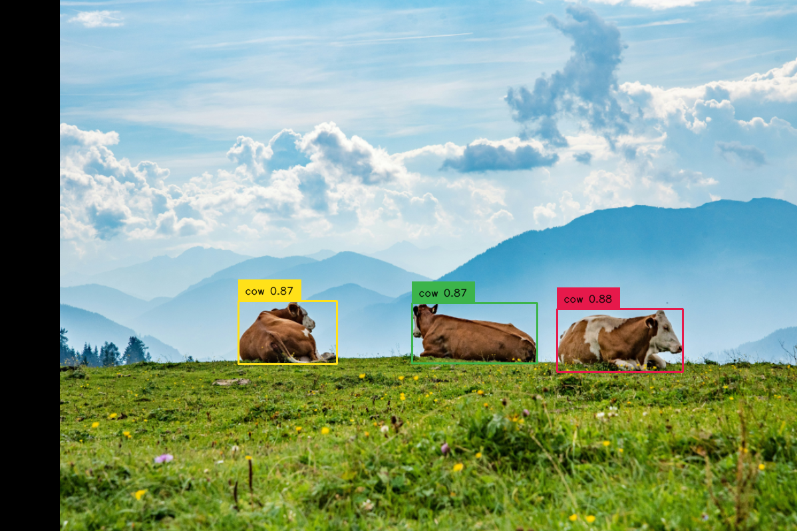
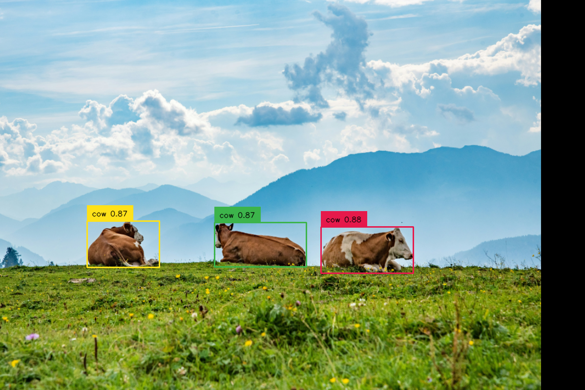
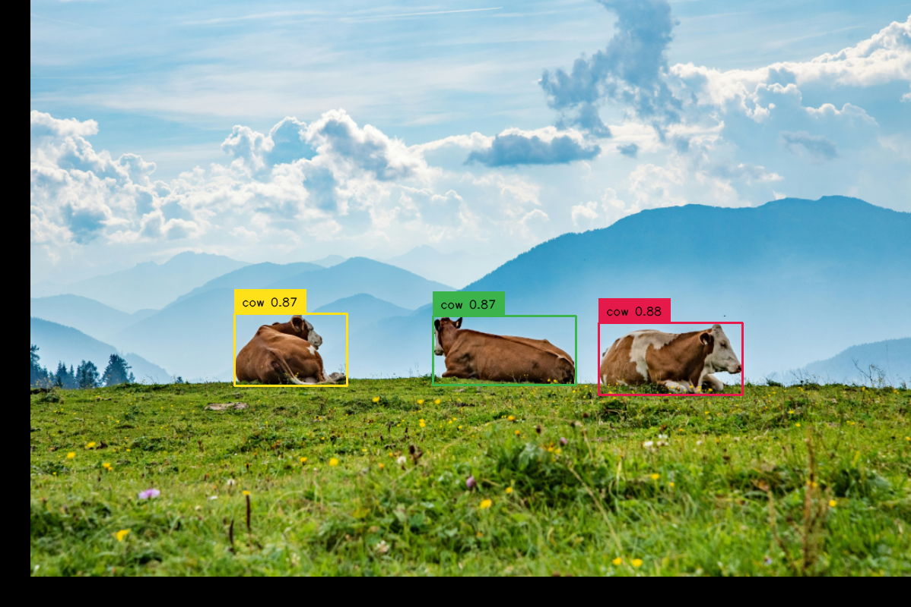
How CNNs Work
History: Experiments on Cats
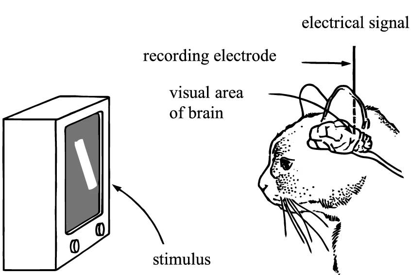
Illustration Source
The CNN Idea
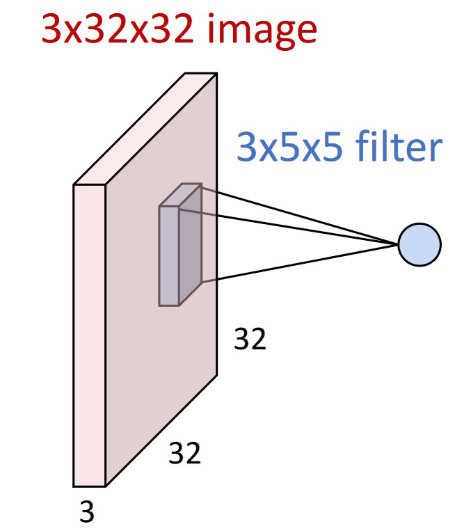
Source: Johnson (2019)
- Local connectivity: a neuron sees a small spatial region
- Parameter sharing: the same filter at every position
- Translation equivariance: input shifts → output shifts
Inductive Bias
- MLPs: minimal bias, very general, data-hungry
- CNNs: assume locality + translation equivariance
- Transformers: assume long-range dependencies
Choosing an architecture = choosing which assumptions to bake in.
Convolution on RGB Images
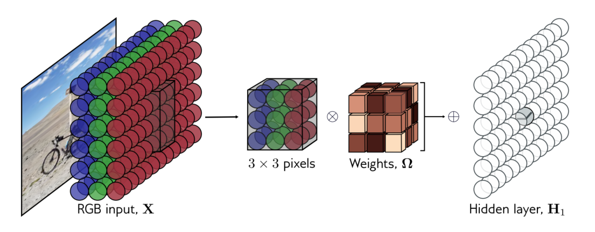
Source: Prince (2023)
\[\begin{equation} S(i, j) = (K * I)(i, j) = \sum_m \sum_n I(i + m, j + n) K(m, n) + b \end{equation}\]
\(I\): input, \(K\): kernel (smaller than \(I\)), \(b\): bias
Demo: Convolution
Find a kernel that detects horizontal edges. Open in new tab
Many Filters, Many Activation Maps
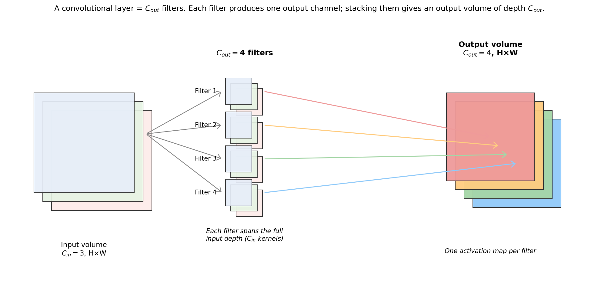
Each filter produces one activation map; \(C_{out}\) filters → \(C_{out}\) channels.
Convolutional Neural Networks
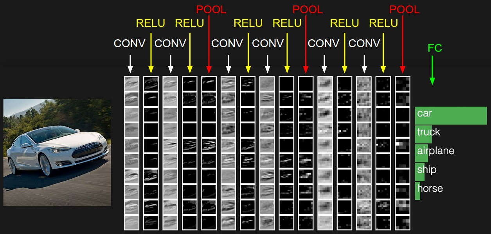
The activations of a ConvNet architecture. The input image is on the left, and the predictions are on the right. Source: Li (2022)
Part 2: Filters, Feature Maps, and Hierarchies
Convolution Hyperparameters
Key parameters to configure a convolutional layer:
- Kernel Size (\(k\)): Spatial extent (typically \(3\times3\) or \(5\times5\))
- Padding (\(p\)): Zero-padding added to input borders
- Stride (\(s\)): Step size when moving the kernel
- Dilation (\(d\)): Spacing between kernel elements
Demo: Convolution Parameters
Task “Reduce the resolution”: 3 × 3 kernel, output 5 × 5. Open in new tab
Formulas
Output size (\(i\): input size, \(k\): kernel, \(p\): padding, \(s\): stride, \(d\): dilation):
\[\begin{equation} o = \left\lfloor \frac{i + 2p - d\cdot(k-1) - 1}{s} + 1 \right\rfloor \end{equation}\]
Number of parameters (\(C_{in}\) input channels, \(C_{out}\) filters, one bias per filter):
\[\begin{equation} \text{Total Parameters} = (k \times k \times C_{in} \times C_{out}) + C_{out} \end{equation}\]
Quiz: Output Shape & Parameters
- Input: \(3 \times 32 \times 32\) (C, H, W)
- Convolution: 10 filters, kernel \(5 \times 5\), stride=1, pad=2
1. Output size? 2. Number of parameters?
1. \(o = \lfloor \frac{32 + 4 - 4 - 1}{1} + 1 \rfloor = 32\) → output \(10 \times 32 \times 32\)
2. \((5 \times 5 \times 3 \times 10) + 10 = 760\) parameters
Padding 2 preserves the spatial size with kernel 5.
Translation Equivariance
Are convolutions translation invariant, equivariant, or both?
Stacking Convolutions
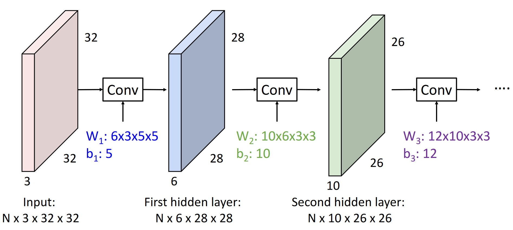
Demo: Receptive Field
Select an activation in the last layer: which inputs can influence it? Open in new tab
Receptive Field: Formula
The receptive field of a CNN \(r_0\):
\[\begin{equation} r_0 = \sum_{l=1}^L \left( (k_l - 1) \prod_{i=1}^{l-1} s_i \right) + 1 \end{equation}\]
- \(L\): Total number of layers
- \(k_l\): Kernel size at layer \(l\)
- \(s_i\): Stride at layer \(i\), from layer 1 up to \(l-1\)
Quiz: Receptive Field
Three layers, each \(k = 3\), \(s = 1\). What is the receptive field \(r_0\)?
\[r_0 = (3-1) + (3-1) + (3-1) + 1 = 7\]
Three \(3\times3\) convs see \(7\times7\), with \(3 \times 9 = 27\) weights instead of \(49\) for one \(7\times7\) (per channel pair).
Learned Filters
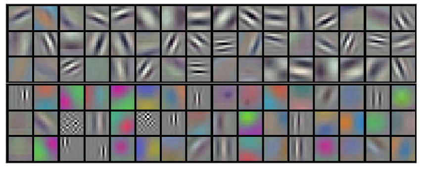
Source: Krizhevsky et al. (2012)
First-layer filters learn edges, colours and textures, without being told to.
Let’s Test It!
Train a CNN in your browser: https://poloclub.github.io/cnn-explainer/
More Layers & Operations
Downsampling
Spatial downsampling reduces resolution (H×W → H’×W’): stride \(> 1\) (learned) or pooling (fixed).
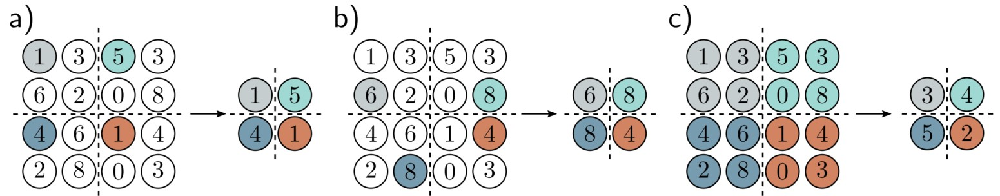
a) Sub-Sampling, b) Max Pooling, c) Average Pooling. Source: Prince (2023)
Upsampling
Needed when the output must have pixel resolution, e.g. segmentation.
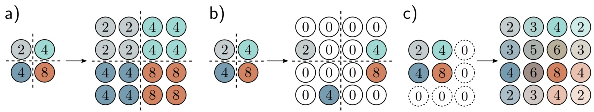
a) Duplicate, b) Max-Unpooling, c) Bilinear Interpolation. Source: Prince (2023)
Also: transposed convolutions (learnable upsampling).
1×1 Convolutions
\((C_{in} \times H \times W) \rightarrow (C_{out} \times H \times W)\): change the number of channels, no spatial mixing.
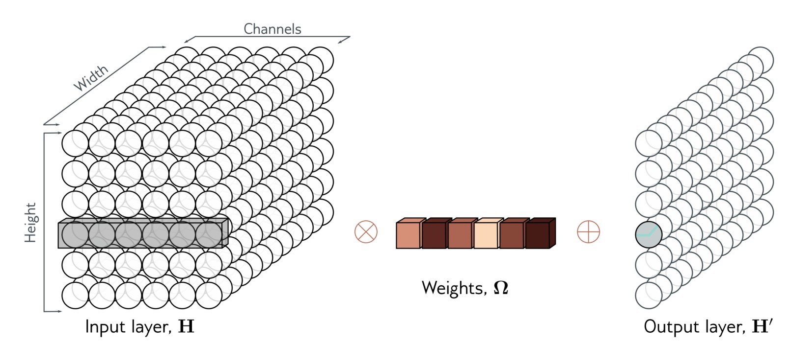
Source: Prince (2023)
Global Average Pooling
Averages each activation map: \((C \times H \times W) \rightarrow (C \times 1 \times 1)\). Often used right before the classifier.
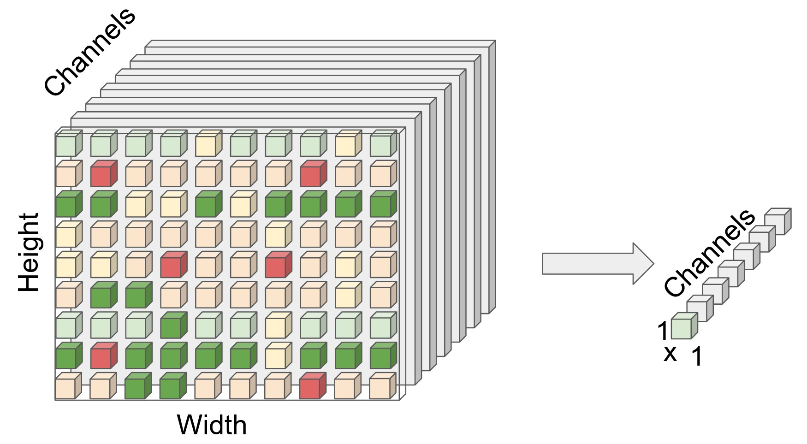
Global Average pooling, input (left) and output (right).
Quiz: MLP vs CNN Efficiency
CIFAR-10 Images: \(32 \times 32 \times 3\)
MLP: 2 hidden layers (256, 128 neurons)
How many parameters in first layer?
CNN: 2 conv layers (16 filters, \(3\times3\), then 32 filters, \(3\times3\))
How many parameters in first layer?
Quiz: Solutions
MLP first layer:
\((32 \times 32 \times 3) \times 256 = 3{,}072 \times 256 = 786{,}432\) parameters
CNN first layer:
\((3 \times 3 \times 3 \times 16) + 16 = 432 + 16 = 448\) parameters
CNN uses 1,755× fewer parameters! 🚀
Why? Local connectivity + parameter sharing = massive efficiency!